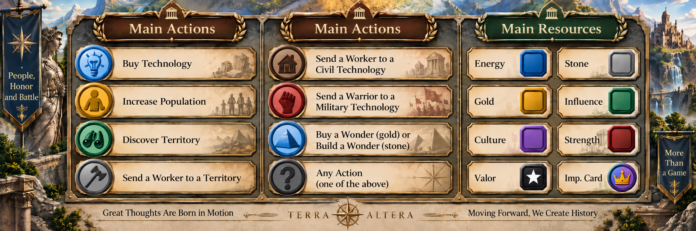

TERRA ALTERA
A Song of the Forgotten Kingdoms

In an alternate world, where history has taken a different course, new kingdoms struggle for supremacy over the fate of humankind. The ageing Emperor is looking for a successor. If you wish to become one, you must lead your civilisation to prosperity and cultural dominance, making wise use of ambassadors and the potential of your dominion.
In Terra Altera, you lead your people: develop technologies, discover new territories, manage resources and population, build wonders, and use your leader’s special abilities. But you are not alone — rival civilisations will use their own strengths and exploit your weaknesses.
Terra Altera combines classic and innovative elements of civilisation games: population and resources, technologies and wonders, leaders and diplomacy, aggression and wars, caravans and barbarians, events, forts, and a strategy track. Together, they create an extensive universe and offer many paths to development.
The game is played on the main board, called the Imperial Court, and on individual player boards. It is designed for 2–4 players. Whatever path you choose, your goal remains the same: cultural dominance over the other kingdoms. You have a chance to become the new Emperor. Remember — the future of Terra Altera is in your hands.
The core mechanism of the game worker palcement (the main board) and playing Imperial cards. This triggers actions that develop your civilisation, visible both on your player board and on the main board.
Actions are triggered by sending pawns to the main board. There are 3 types of action pawns, as well as workers:
- Ambassador — a reusable action pawn
- Tribe — a single-use action pawn
- Pyramid — a single-use action pawn
- Worker (warrior) — a pawn that works on technologies and territories
Players place pawns in turn on the appropriate action spaces of the main board. A worker is sent to technologies and territories to produce resources and strength.

The game unfolds simultaneously on two levels — on the shared main board, called the Imperial Court, where you compete for access to actions, and on individual player boards, where you develop your own civilisations.


Every game of Terra Altera is different thanks to its rich variety of cards: technologies and wonders that build the power of your civilisation, Imperial cards that enable diplomatic development or additional actions, and leader, colony, and barbarian cards that change the course of play.
Technologies and Wonders
 Technology
Technology Wonder
Wonder Technology
Technology Wonder
Wonder Technology
TechnologyImperial Cards
 Imperial card
Imperial card Imperial card
Imperial card Imperial card
Imperial card Imperial card
Imperial card Imperial card
Imperial cardLeaders, Colonies and Barbarians
 Leader
Leader Colony
Colony Barbarians
Barbarians Colony
Colony Leader
LeaderEach round of Terra Altera takes players through the same clear sequence of phases. This keeps the game dynamic while making it easy to learn from the very first game.
- PRound Preparation
- 1Event Card
- 2Diplomacy (optional), play an Imperial card
- 3Actions — worker placement + Imperial cards
- 4Production
- 5Resolve Events
- 6Colonisation
- 7War Status
- 8Manuscript Cards — only in the 4th and 6th eras
 Event
Event Event
Event Event
EventActions
On your turn, you choose one of the main actions, for example: buying a technology, increasing population, discovering a territory, or sending a worker to technologies or territories in order to produce resources or increase strength.
Resources
Your civilisation relies on resources that enable its development: energy, stone, gold, influence, energy, culture, strength, and valour. Imperial cards are also a resource in the game. Each resource is needed to develop a different branch of your civilisation. For example, gold allows you to discover territories and buy technology and wonder cards, while energy enables population growth.

Game Design
Adam Stecyk
Playtesters
- Anna Stecyk
- Gabriela Poszumska
- Maciej Czaplewski
- Filip Stelter
- Tomasz Wawrzyniak
- Rafael Benoit
- Michał Chełminiak
- + 14 additional playtesters
Contact Us
Do you have questions about the game, would you like to become a playtester, or would you like to discuss cooperation? Write to us at the address below.
adam.stecyk@usz.edu.pl